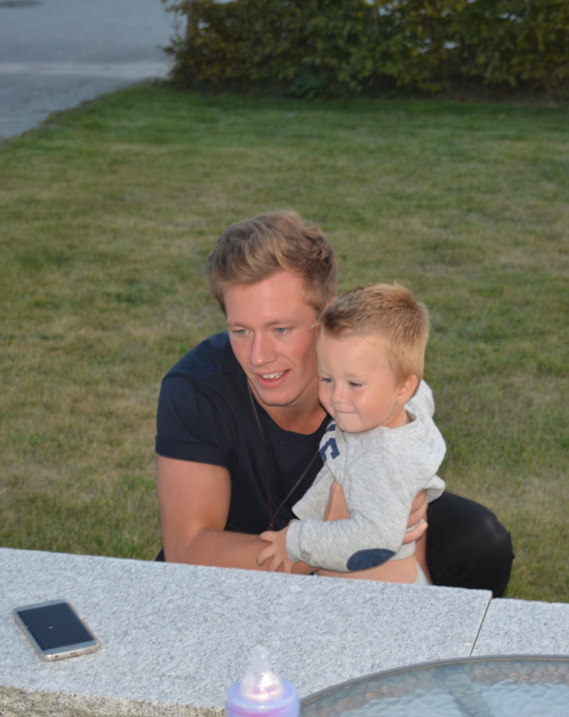

Arbetslivserfarenheter
Klicka på respektive text för att få fram önskad information
Anställningar
- Personlig Assistent:
- Assistent på Gotland AB - Oktober 2018 tills nu.
- Nuvarande tjänst: Nattarbete på 52%. Gick ner i tid pga studier.
- Kriminalvårdare:
- Kriminalvården, Häktet Visby - Mars 2017 tills nu.
- Nuvarande tjänst: timvikariat, oftast nattarbete. Var heltidsanställd men valde att säga upp mig.
- Som kriminalvårdare arbetar man med tillsyn, vård och övervakning av intagna vid kriminalvårdens anstalter och häkten. I arbetsuppgifterna ingår att ansvara för de dagliga rutinerna och upprätthålla säkerheten på anstalten. Kriminalvårdaren har en nära kontakt med de intagna och fungerar som kontaktman och stödperson. Eftersom man arbetar med utsatta människor kräver yrket att man är stresstålig och psykiskt stabil.
- Transportör/flyttkarl:
- Ilexpressen AB - 2010 till 2017.
- Arbetade så mycket jag ville när jag inte var bosatt utomlands.
- Dagisvikarie:
- Toptemp Bemanning - November 2013 till maj 2014.
- Anställning i Norge.
- Lärarvikarie:
- Region Gotland - Juni 2010 till oktober 2013.
- Här arbetade jag till och från genom åren, eftersom jag oftast jobbade på Ilexpressen AB.
- Restaurang/nattklubb/bar/disk:
- Hamnplan 5 - Juni 2009 till maj 2011.
- Extraarbete under en period. Helger och veckodagar efter skolan, samt en sommar.
Kortare Anställningar
- Mekaniker/svetsar assistent:
- Toptemp bemanning (Norge 2013)
- Telefonförsäljare:
- Miljonspelet (Malta 2012)
- Kundsupport:
- Neogames (Malta, 2012)
- Fordonsuthyrare:
- Visby Hyrcykel (sommarjobb, 2009)
- Cafébiträde:
- Märthas Café (sommarjobb + extra, 2007-09)
- Diskare/frukostbiträde:
- Toftagården (sommarjobb + extra, 2005-07)
Utbildningar
- Webbutvecklare .net:
- Augusti 2021 till juni 2023.
- Webbapplikation MVP, 50 yhp
- Objektorienterad programmering med C#, 25 yhp
- Dynamiska Webbsystem 1, 25 yhp
- Dynamiska Webbsystem 2, 25 yhp
- Affärsmannaskap för IT, 25 yhp
- Moderna Webbapplikationer, 50 yhp
- Webbapplikationer med realtidskommunikation, 50 yhp
- Lärande i arbete 1, 50 yhp
- Affärsutveckling för IT, 25 yhp
- Examensarbete, 25 yhp
- Lärande i arbete 2, 50 yhp
- Kriminalvårdens grundutbildning:
- Inriktning Häkte/anstalt - Augusti 2017 till februari 2018.
- Etik och professionellt förhållningssätt, regelverk, klienten och verkställigheten, säkerhet och konflikthantering, hälsa och sjukvård.
- Kriminalvården larmchef:
- Övergripande målsättning att utveckla förmågan till ledning vid larmplats.
- Kriminalvården batong:
- Handhavande av expanderbatong.
- Kriminalvården batong:
- Samhällsvetenskapliga programmet - 2007-2010.
- Inriktning ekonomi, redovisning & beskattning samt småföretagande.
Övriga Meriter
- E-kurser Kriminalvården:
- Läkemedelshantering, Grundläggande utbildning i IT- och informationssäkerhet samt gällande regelverk inom Kriminalvården, repetitionsutbildning i omhändertagande vid akuta sjukdomstillstånd samt symptom och behandlingar. Plus många fler.
- Packmästarkurs TYA:
- Porslinspackning, skyddsemballering, Export- och specialemballering, stuvningsteknik, flytteknik, arbetsplanering, kundrelationer, ergonomi, arbetsmiljöfrågor, försäkringsfrågor.
- Körkort:
- B, 2009-06-23 & Truckförare, 2013-09-24.
- Datorvana:
- Goda kunskaper i datorer överlag, även i Office programmen, Microsoft OS och Mac OS.
- Språk:
- Svenska & Engelska, flytande i tal och skrift.